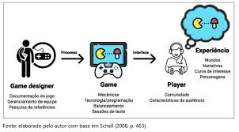
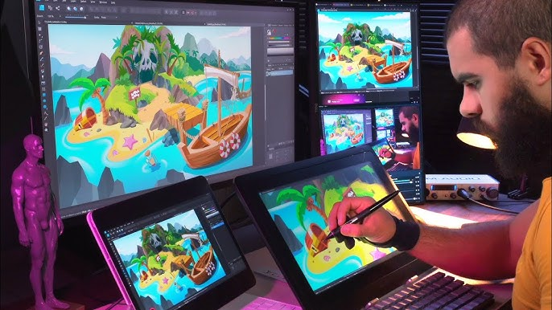
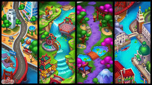
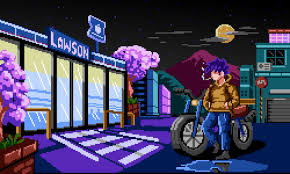

CORES
NO DESIGN
Explore o universo das cores, suas propriedades físicas, percepção visual e aplicações na arte, design e tecnologia.
Explore o universo das cores, suas propriedades físicas, percepção visual e aplicações na arte, design e tecnologia.

DNo design, as cores são usadas para criar harmonia visual, destacar elementos importantes e
transmitir sensações. Um bom uso das cores pode tornar um projeto mais atrativo, organizado e
fácil de entender. Por exemplo, cores claras podem transmitir leveza e simplicidade, enquanto
cores mais escuras podem passar seriedade e sofisticação.
Nos jogos, as cores ajudam a criar atmosferas e experiências imersivas. Elas podem indicar
perigo, segurança, ação ou calma dentro do ambiente do jogo. Além disso, cores vibrantes são
frequentemente usadas para chamar atenção do jogador para objetivos, itens importantes ou
informações na tela. Isso melhora a jogabilidade e a experiência do usuário.


Em muitos jogos, cores são usadas para guiar ações sem precisar de texto. Por exemplo, vermelho costuma indicar perigo ou inimigos, enquanto verde geralmente indica vida ou cura.
Bons jogos ensinam mecânicas apenas com o ambiente. O jogador aprende testando, sem precisar de tutoriais longos, como acontece em jogos como Super Mario Bros..
Coisas como som de passos diferentes dependendo do chão, animações de impacto e até vibração do controle fazem parte do design para deixar o jogo mais realista e envolvente.

MUNDO DOS GAMES
Inventarem um jogo simples e Escrever:
Nome do jogo
Objetivo
Regras
Personagens
Como o jogador vence
Objetivo: estimular criatividade e lógica de jogos
